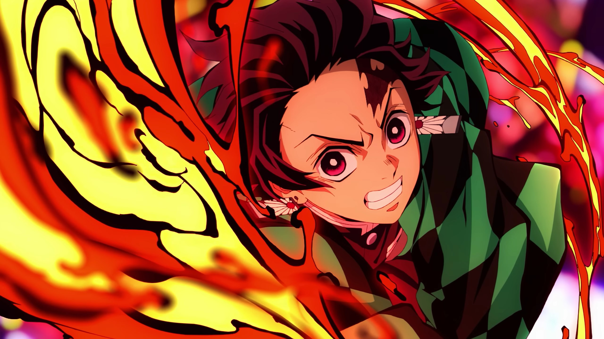
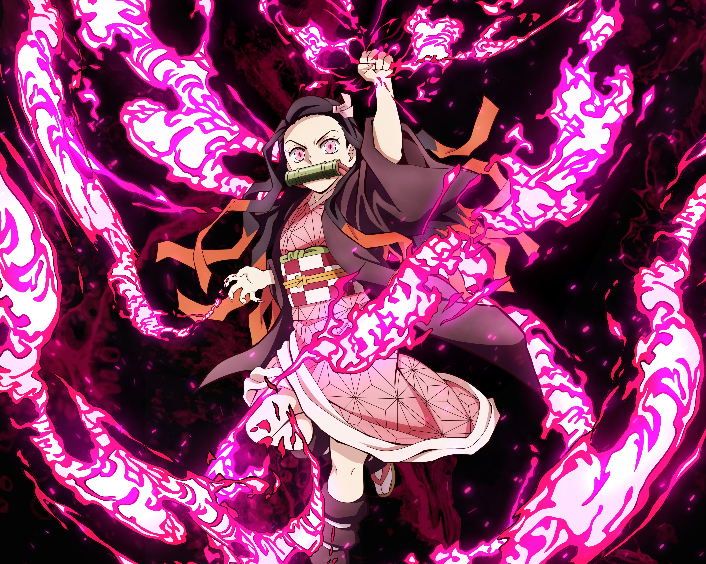
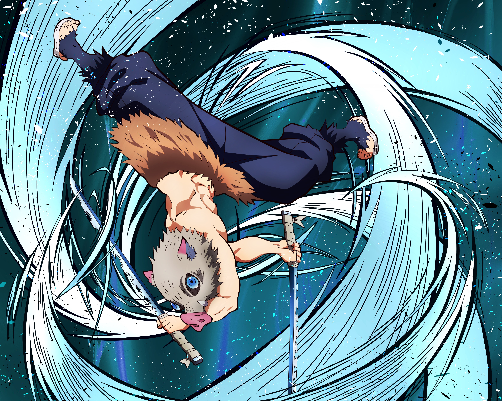
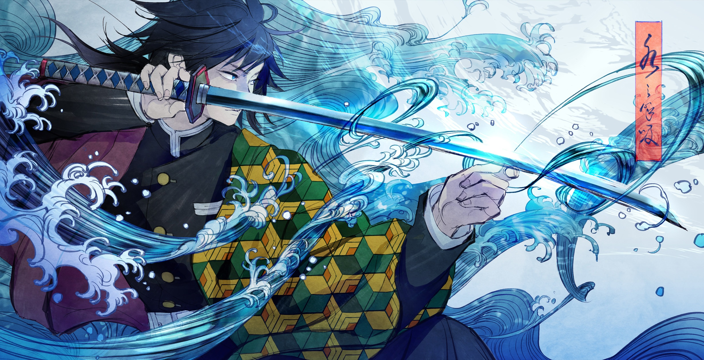
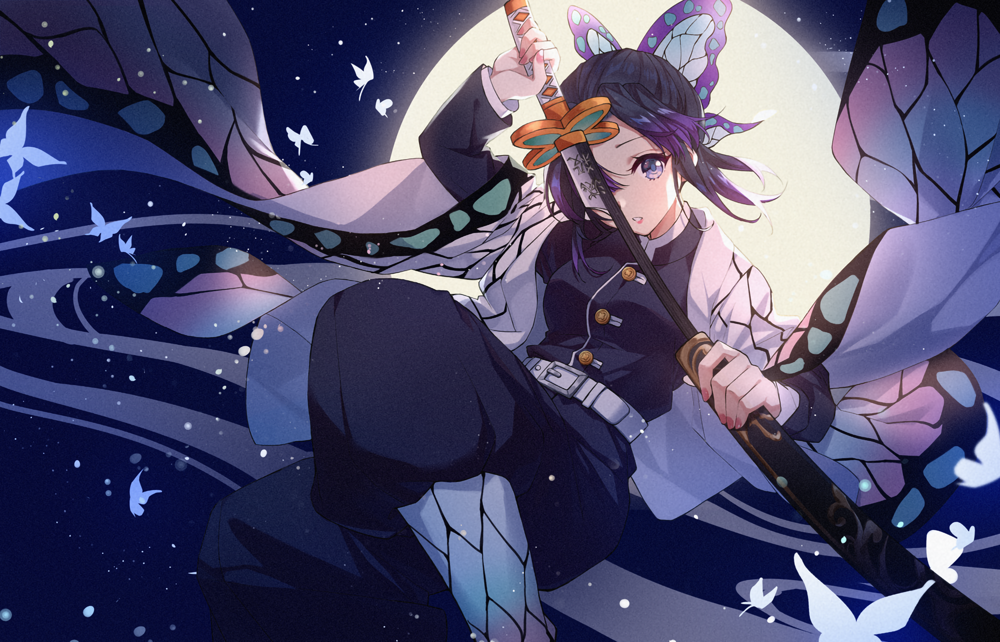
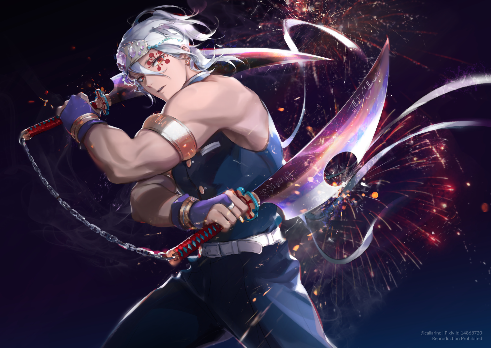
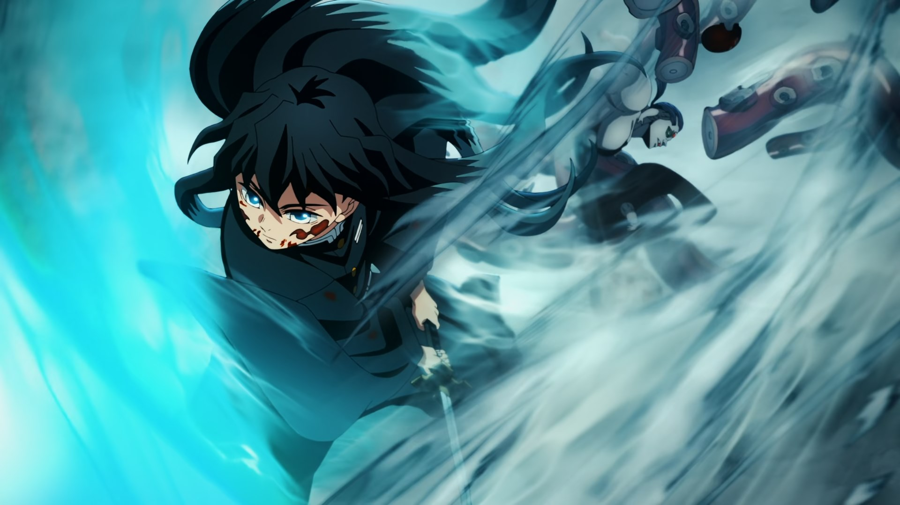
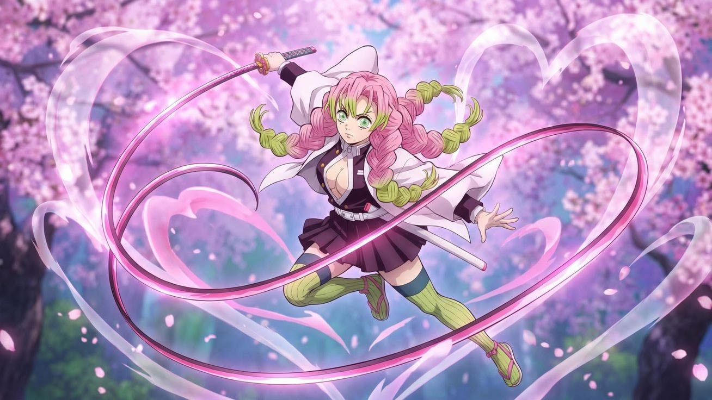
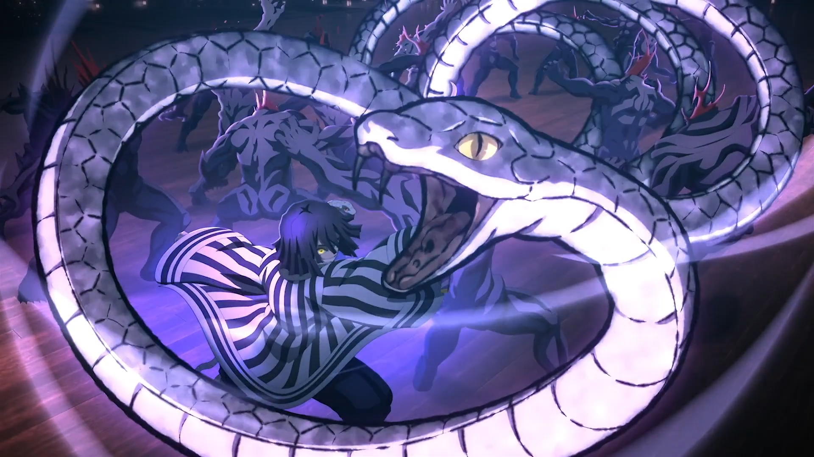
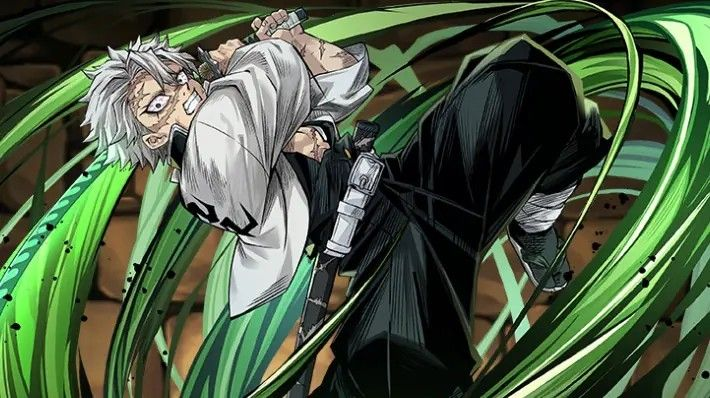

A História de Demon Slayer
No Japão da Era Taisho, Tanjiro Kamado é um menino de bom coração que ganha a vida vendendo carvão. No entanto, sua vida pacífica é destruída quando um demônio (Oni) massacra sua família. A única sobrevivente é sua irmã mais nova, Nezuko, que foi transformada em um demônio.
Para transformá-la de volta em humana e se vingar do demônio que matou sua família, Tanjiro decide se tornar um Caçador de Demônios.
Perfis dos Personagens

Tanjiro Kamado
O protagonista que usa a Respiração da Água e do Sol.

Nezuko Kamado
A irmã de Tanjiro que luta para proteger os humanos.

Zenitsu Agatsuma
Um mestre na Respiração do Trovão que luta dormindo.

Inosuke Hashibira
O selvagem mestre da Respiração da Fera.

Kyojuro Rengoku
O Hashira das Chamas com um coração ardente.

Giyu Tomioka
O silencioso Hashira da Água que iniciou a jornada.

Shinobu Kocho
A letal mestre dos venenos e da Mansão Borboleta.

Tengen Uzui
O extravagante mestre do som e ex-ninja.

Muichiro Tokito
O prodígio da névoa que se tornou Hashira em dois meses.

Mitsuri Kanroji
A Hashira do Amor com uma força física surpreendente.

Obanai Iguro
O mestre da serpente que luta com uma lâmina sinuosa.

Sanemi Shinazugawa
O impetuoso Hashira do Vento com sangue especial.